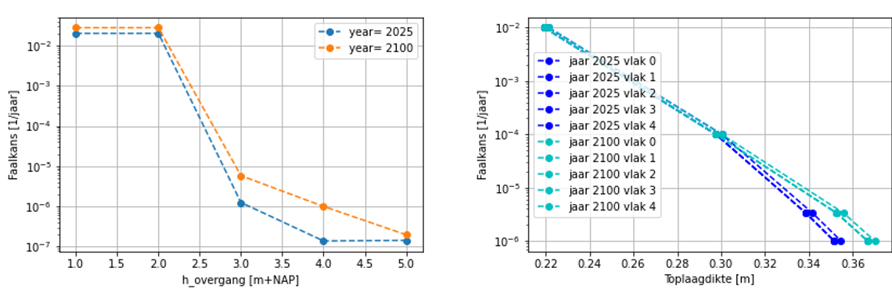
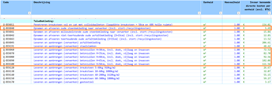

Maatregelen dijkbekleding#
Een maatregel wordt gedefinieerd als een ontwerp van de dijkbekleding (per locatie en per zichtjaar) en wordt beschreven door twee ontwerpparameters:
Hoogte van de overgang,
Toplaagdikte van de steenbekleding die bij een bepaalde faalkans hoort.
Voor een dergelijke maatregel worden de faalkans van de grasbekleding en de faalkans van de steenbekleding (per dijkvlak) afgeleid. Vervolgens wordt het maximum van de kansen per dijkvlak berekend. Dit maximum wordt bij de faalkans van de grasbekleding opgeteld om de gecombineerde faalkans van de bekleding te verkrijgen.
Het toepassen van de maatregelen wordt aan de hand van het volgende voorbeeld toegelicht, waarin een fictief dijkvak in traject 26-3 (Oosterschelde) wordt beschouwd. De signaleringswaarde van het dijktraject is 1/10.000 per jaar. De onderstaande tabel presenteert de bekledingstypen per vlak; de steenbekleding bevindt zich tussen -0,27 en 3,0 m+NAP (type 26; 26,1) de overgang naar de grasbekleding ligt op 3,0 m+NAP (type 20).
Van [m+NAP] |
Tot [m+NAP] |
Typetoplaag |
Toplaagdikte [m] |
|---|---|---|---|
-0,27 |
1,89 |
26,0 |
0,30 |
1,89 |
3,00 |
26,1 |
0,30 |
3,00 |
5,87 |
20,0 |
- |
De faalkanseis voor GEBU bedraagt 1/400.000 per jaar. De faalkanseis voor ZST is gelijk aan 1/800.000 per jaar. Voor het dijkvak worden de relaties uit Figuur 1 gehanteerd. De grasbekleding met een overgang op 3,0 m+NAP voldoet aan de eis in 2025, maar niet meer in 2100. De steenbekleding met een dikte van 30 cm voldoet niet de eis en is de bijbehorende faalkans gelijk aan ca. 1/10.000 per jaar.

Figuur 1 Links: relatie tussen de overgang en de faalkans van de grasbekleding; rechts: relatie tussen de toplaagdikte en de faalkans van de steenbekleding.
De bekleding wordt versterkt door deze opties te beschouwen:
Optie 1: de toplaagdikte van de steenbekleding wordt 40 cm
Optie 2: de toplaagdikte van de steenbekleding wordt 35 cm en de overgang wordt verplaatst naar 3,5 m+NAP
In het geval van Optie 1 geldt:
Faalkans ZST: ca. 1,0E-06 per jaar in 2025 en 2100
Faalkans GEBU: 1,25E-06 per jaar in 2025 en 5,81E-06 per jaar in 2100 (huidige situatie)
Totale faalkans bekleding (optelsom): 2,25E-06 per jaar in 2025 en 6,81E-06 per jaar in 2100
In het geval van Optie 2 geldt:
Faalkans ZST: 1,83E-06 per jaar in 2025 en 1,34E-05 per jaar in 2100
Faalkans GEBU: 6,94E-07 per jaar in 2025 en 3,4E-06 per jaar in 2100
Totale faalkans bekleding (optelsom): 2,53E-06 per jaar in 2025 en 1,68E-05 per jaar in 2100
Optie 2 is effectiever dan Optie 1, omdat de faalkansen in 2025 en in 2100 dan lager zijn.
Kostenfunctie#
De kosten van het verbeteren van de bekleding worden bepaald op basis van de eenheidsprijzen uit KOSWAT (bron: 20220606 KOSWAT (LBK202201 v1.0)), die in de volgende tabel worden weergeven. In deze studie maken we gebruik van de informatie die in de gemarkeerde rijen staat:
De kosten van opnemen en afvoeren van de oude steenbekleding
De kosten van leveren en aanbrengen van betonzuilen (de nieuwe steenbekleding), afhankelijk van de toplaagdikte

De kost van een maatregel heeft betrekking alleen op de kosten van de nieuwe steenbekleding, hier worden er twee gevallen onderscheiden:
De nieuwe steenbekleding wordt aangebracht op een locatie waar al een steenbekleding ligt
De nieuwe steenbekleding wordt aangebracht op een grasbekleding (dat geldt voor gevallen met een nieuwe overgang)
Om de kosten per vlak te bepalen wordt eerst de oppervlakte (A) van het te versterken dijkvlak berekend:
A=L√((X_b-X_o)^2+(Z_b-Z_o)^2 )
Waarin:
Zo – onder niveau van het vlak [m+NAP]
Zb – boven niveau van het vlak [m+NAP]
Xo – x-coördinaat van Zo [m]
Xb – x-coördinaat van Zb [m]
L – lengte van het dijkvak [m]
Voor het geval waarin de nieuwe steenbekleding met toplaagdikte D aangebracht wordt op een locatie waar al een steenbekleding ligt wordt de kost per dijkvlak als volgt afgeleid:
Kost per dijkvlak = A * (Kostafvoeren + Kostzuilen(D)) * Opslagfactor
Voor het geval waarin de nieuwe steenbekleding met toplaagdikte D aangebracht wordt op een locatie met gras wordt de kost voor het opnemen en afvoeren van oude steenbekleding niet meegerekend:
Kost per dijkvlak = A * Kostzuilen(D) * Opslagfactor
Waarin:
Kostafvoer – kost van het opnemen en afvoeren van de oude steenbekleding [in euro per m2 excl. BTW]
Kostzuilen – kost van het leveren en aanbrengen van betonzuilen, afhankelijk van de toplaagdikte [in euro per m2 excl. BTW]
D – toplaagdikte nieuwe steenbekleding [m]
Opslagfactor = 2,509
De totale kosten worden berekend door de kosten per vlak bij elkaar op te tellen. Voor de kosten in 2100 wordt een discontovoet gebruikt.